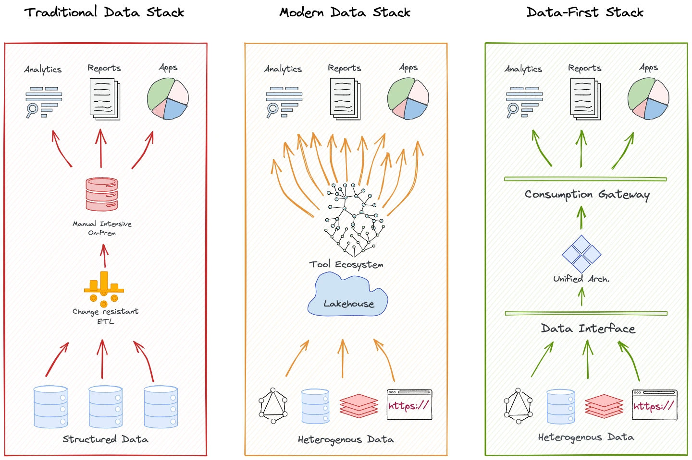
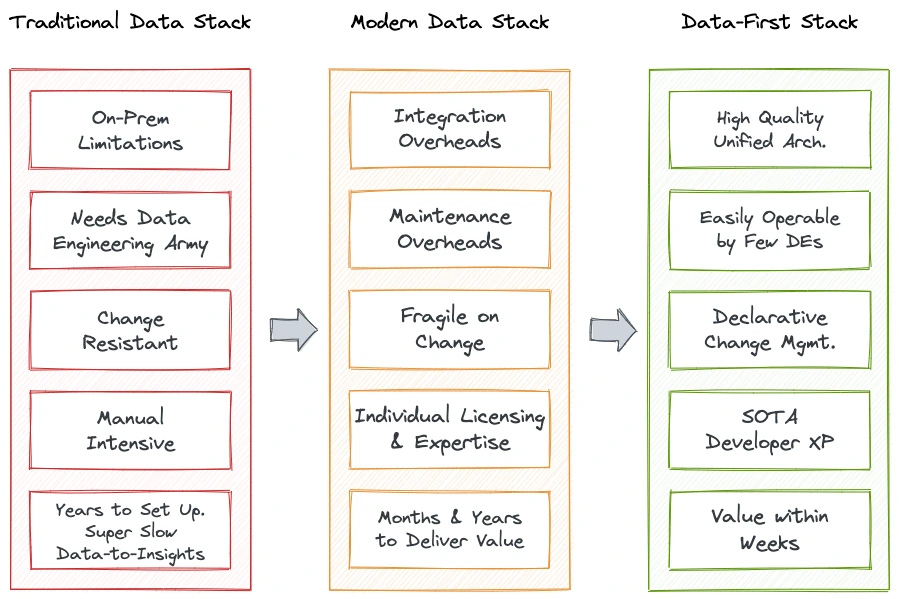
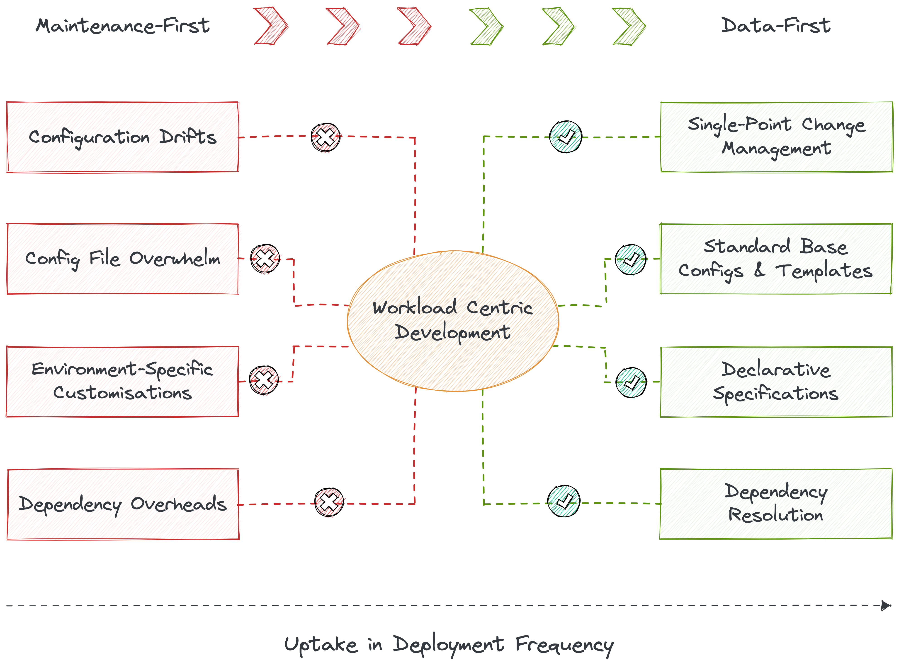

Why
Why DDP for Data¶
The Problem¶
The data world has been battling a persistent crisis, and it has only been exacerbated by the growing intensity of data owned and managed by organizations. Chaos has ensued for non-expert end users as data ecosystems progressively develop into complex and siloed systems with a continuous stream of point solutions added to the insane mix. Complex infrastructures requiring consistent maintenance deflect most of the engineering talent from high-value operations, such as developing data applications that directly impact the business and ultimately enhance the ROI of data teams. Inflexible and unstable, and therefore, fragile data pipelines constrict data engineering teams as a bottleneck for even simple data operations. It is not uncommon to hear a whole new data pipeline being spawned to answer one specific business question or 1000K data warehouse tables being created from 6K source tables.
Data Consumers suffer from unreliable data quality, Data Producers suffer from duplicated efforts to produce data for ambiguous objectives, and Data Engineers suffer from flooding requests from both data production and consumption sides. The dearth of exemplary developer experience also robs data developers of the ability to declaratively manage resources, environments, and requests so they can focus completely on data solutions. Due to these diversions and the lack of a unified platform, it is nearly impossible for DEs to build short and crisp data-to-insight roadmaps. On top of that, it’s a constant struggle to adhere to the organization’s changing data compliance standards as governance and observability become afterthoughts in a maintenance-first setting. This directly impacts the quality and experience of data that passes through meandering pipelines blotched with miscellaneous integrations.
Arriving at Assembled Data Stacks
The concept of having an assembled architecture emerged over time to solve these common problems that infested the data community at large. One tool could tend to a particular problem, and assembling a collection of such tools would solve several issues. But, targeting patches of the problem led to a disconnected basket of solutions ending up with fragile data pipelines and dumping all data to a central lake that eventually created unmanageable data swamps across industries. This augmented the problem by adding the cognitive load of a plethora of tooling that had to be integrated and managed separately through expensive resources and experts.
Data swamps are no better than physical files in the basement- clogged with rich, useful, yet dormant data that businesses are unable to operationalise due to disparate and untrustworthy semantics. Semantic untrustworthiness stems from a chaotic clutter of MDS, overwhelmed with tools, integrations, and unstable pipelines. Another level of semantics is required to understand the low-level semantics, complicating the problem further.

The MAD Ecosystem | Source: mattturck.com
Two distinct features become more apparent with this kind of tooling overwhelm:
1. Progressive overlap in Assembled Systems¶
As more tools pop in, they increasingly develop the need to become independently operable, often based on user feedback. For instance, two different point tools, say one for cataloguing and another for governance, are plugged into your data stacks. This incites the need not just to learn the tools’ different philosophies, integrate, and maintain each one from scratch but eventually pop up completely parallel tracks. The governance tool starts requiring a native catalog, and the cataloguing tool requires policies manageable within its system. Now consider the same problem at scale, beyond just two point solutions. Even if we consider the cost of these parallel tracks as secondary, it is essentially a significantly disruptive design flaw that keeps splitting the topology of one unique capability into unmanageable duplicates.
2. Consistent and increasing desire to Decentralise¶
What follows from assembled systems is the sudden overwhelm of managing multiple limbs of the system, and therefore, increasing complexity and friction for end users to get their hands on the data. While business domains, such as marketing, sales, support, etc., have to jump multiple hops to achieve the data they need, the organisation feels the pressure to lift all dependencies clogging the central data team and distributing the workload across these domains. Ergo, it was not a surprise to see how the early Data Mesh laid urgent focus on domain ownership, or decentralisation in other words. While the idea seems very appealing on theoretical grounds, how feasible is it in the field? If we lay this idea on any working business model, there are a few consequences:c
- Not enough skilled professionals to allocate to each individual domain - Practically, how feasible is the idea of having data teams for each domain?
- Not enough professionals or budget to disrupt existing processes, detangle pipelines, and embed brand-new infrastructures.
- Not enough experts to help train and onboard during migration.
It’s both a skill- and resource-deficit issue. Moreover, with decades spent on evolving data stacks with not much value to show, organisations are not ideally inclined to pour in more investments and efforts to rip and replace their work. In essence, 𝐀𝐮𝐭𝐨𝐧𝐨𝐦𝐲 instead should become the higher priority over Decentralisation if that is the ultimate objective.
The Solution¶
The true value of assembled systems cannot be neglected. Its biggest achievement has perhaps been the revolutionary shift to the cloud, which has made data not just more accessible but also recoverable.
However, the requirement for unified over assembled systems was felt largely due to the overwhelming build-up of cruft within the bounds of data engineering. The more tools, the more overlap and cruft. **Traditional approaches often require specialised skills and resources, leading to bottlenecks and limited innovation.
The Data-First Stack (DFS) is based on a unification approach or an umbrella solution that targets the weak fragments of the Traditional and Modern data stacks as a whole instead of proponing their patchwork approach. A DDP, which is the technical embodiment of a Data-First Stack, democratises data product development by abstracting away low-level complexities and providing a unified platform that enables data professionals across the organisation to contribute and collaborate on data products. This democratisation fosters innovation, creativity, and a sense of ownership among data professionals.

Unified Architecture over Assembled Architecture¶
DFS, as implemented by your organisation’s data developer platform, brings together a curated set of self-service layers that eliminate redundant tools and processes to enable a reusable, modular, and composable operating platform, elevating user productivity. Now, instead of grinding to integrate and maintain hundreds of scattered solutions, users can put data first and focus on the core objectives: Building Data Applications that directly uplift business outcomes.
The Data-First Stack is essentially a unified architecture design. The best parallel analogy for a unified architecture would be an operating system (OS). An OS is a program that manages all programs necessary for the end user to experience the service of outcome-driven programs instead of users figuring out ‘how’ to run those programs. Most of us have experienced OS on our laptops, phones, and, in fact, on most interface-driven devices. Users are hooked to these systems because they are abstracted from the pains of booting, maintaining, and running the low-level nuances of day-to-day applications that directly bring them value.
💡 The unified architecture of a Data-First Stack is materialised by a Data Developer Platform, enabling a self-serve data infra by abstracting users from the procedural complexities of applications and declaratively serving the outcomes.
DDP serves as a unified platform that integrates various tools and technologies involved in the data product delivery process. It seamlessly integrates with popular developer tools, version control systems, container registries, orchestration frameworks, and infrastructure-as-code tools like Terraform. This integration simplifies the development workflow, enhances developer productivity, and enables the seamless adoption of new tools and technologies.

A Closer Look at the Solution: Achieving the State of Data Products¶
The sole objective of Data Developer Platforms is to create and enable Data Products for various operations and domains in a business. DDP’s unified architecture has proven to be a fast and concrete path to establishing data products. The term “Data Products” is perhaps new, but the concept it defines has persisted since businesses started working with data, that is since a caveman exchanged three bags of berries for one piece of steak. Why that is should be clear once we expand on the eight core attributes of data products. To briefly summarise, a data product enables reliable and high-quality data at scale to help accelerate business use cases.
| Attribute | Description |
|---|---|
| Discoverable | A Data Product must be easy to find. |
| Addressable | A Data Product must be easy to refer to across the data ecosystem. |
| Understandable | A Data Product must be easy to comprehend & consume. |
| Natively Accessible | A Data Product must be easy to operate on with pre-existing tools and processes in the domain that users (domain citizens) are already comfortable with. |
| Trustworthy | A Data Product must guarantee the quality and authenticity of the data it presents. |
| Interoperable | A Data Product must be able to network with other data products and resources from across the data stack. |
| Independent | A Data Product must be self-contained and valuable on its own, and the data it presents should serve a purpose. |
| Secure | A Data Product must be guarded against bad actors, human or machine, throughout its journey in the data stack. |
You can learn more about data products here.
Businesses have desired each of these attributes in data since time immemorial, but only recently some of them have achieved this state like many other breakthroughs of the 21st century, especially around data including AI - the self-operating machine dependent on trustworthy data.
We will soon find out how DDP bridges the gap between untrustworthy raw data and reliable Data Products, but before that, we need to see why the DDP specification has been a concrete approach so far. Platforms built with the DDP specification as a guideline have consistently delivered Data Products with full-proof testimonies from consumers of their data.
Why build a DDP for Data Products¶
Faster Time to Data Products¶
Time and effort invested behind every deployment can vary based on the deployment load, team size, stage of organisation, expertise level, and much more. However, taking an average across hundred deployments, the time spent on specific tasks per deployment can be summarised as laid out by internaldeveloperplatform.org. These numbers can be replaced by calculating your own average stats per hundred deployments.
| Procedure | Frequency (%of deployments) | Dev Time in hours (including waiting and errors) | Ops Time in hours (including waiting and errors) |
|---|---|---|---|
| Add/update app configurations (e.g. env variables) | 5%* | 1h* | 1h* |
| Add services and dependencies | 1%* | 16h* | 8h* |
| Add/update resources | 0.38%* | 8h* | 24h* |
| Refactor & document architecture | 0.28%* | 40h* | 8h* |
| Waiting due to blocked environment | 0,5%* | 15h* | 0h* |
| Spinning up environment | 0,33%* | 24h* | 24h* |
| Onboarding devs, retrain & swap teams | 1%* | 80h* | 16h* |
| Rollback failed deployment | 1,75% | 10* | 20* |
| Debugging, error tracing | 4.40% | 10* | 10* |
| Waiting for other teams | 6.30% | 16* | 16* |
*per 100 deployments
Acceleration by Abstraction¶
These numbers do not necessarily matter when the number of deployments is low. However, when it comes to large organisations managing several projects with hundreds or even thousands of deployments every week, these numbers start hurting the ROI of data teams massively. Even adding just one tailing zero to the stats above shows us how existing maintenance processes suck out the valuable time of engineers.
A Data Developer Platform is an easily operable, swift, self-served path to data products. With ready-to-deploy templates and standardised protocols, data developers can quickly spin up data applications without spending too much time on infrastructure dependencies and configurations. DDP enables higher deployment frequency for data products by abstracting most of the cognitive load and keeping the numbers from inflating drastically when the scale goes up.
Acceleration by Standardisation¶
The API-first infrastructure of DDP enables modularisation and interoperability with both native and external components ensuring quicker deployments and rollback abilities without having to spend hours on infrastructure chores. Users can choose to process data at the source, push down queries and workloads, or even move processing to native environments if needed. With central management across development to deployment, monitoring, and maintenance, and seamless discovery of open APIs, users can augment and manipulate the data programmatically, version, release, configure, monitor, reproduce and much more to dramatically enhance the speed of data application development.
DDP introduces standardised resources and design patterns, creating a shared language and best practices for data product development. This standardisation enhances collaboration among data developers, promotes code reusability, and reduces the risk of errors and inconsistencies in data products. Standardisation of configurations and templates plays a vital role in expediting the development of data products. Templates and preconfigured settings can be leveraged to expedite the creation of new data products, eliminating the need for repetitive and time-consuming setup and maintenance.
Data developers can quickly deploy workloads by eliminating configuration drifts and vast number of config files through standard base configurations that do not require environment- or dependency-specific variables. The platform auto-generates manifest files for apps, enabling CRUD ops, execution, and meta storage on top.
Acceleration by Modularisation¶
But it is not just declarative infrastructure that enables faster time to data products. We also need to consider how adept the infrastructure is to enable the Data Products attributes: Discoverable, Addressable, Understandable, Natively Accessible, Trustworthy, Interoperable, Independent, and Secure. This also implies that governance and observability are no longer afterthoughts but are embedded in the data. By proactively addressing these aspects, organizations can enhance data quality, mitigate risks, and ensure compliance with regulatory requirements.
DDP’s modular infrastructure with fundamental atomic building blocks, where each block facilitates a unique capability on data, enables the above seamlessly. Decoupling services is a huge accelerator. And an even bigger accelerator is decoupling data applications from the data infrastructure. These two components are dangerously tied together in existing structures, leading to far more resources spent on tending to infra requirements from scratch for every application.
Other than resource or capability modularisation, DDP also incorporates the modularisation of high-level solutions. For instance, DDP provides modularisation of governance policies with attribute-based access control (ABAC) mechanisms to ensure granular permissions regulation and secure data resource access. It enables fine-grained control over who can access, modify, and interact with data products, ensuring data privacy, compliance, and governance.
The standard configurations enable a single point of change management, given it’s built with reference to these atomic resources. The atomic units are able to easily communicate with each other to establish higher-order objectives such as, say, discoverability or policy management. Or even the standard data lifecycle processes such as data ingestion, processing, analysis, and visualisation - A DDP empowers data teams by providing a comprehensive platform that supports their end-to-end workflows. Data teams have the necessary tools, resources, and standardised practices to deliver high-quality data products, enabling them to make data-driven decisions and derive meaningful insights. You can read more on DDP building blocks here.
Fluid Data Product Developer Experience¶
Data Products can be messy, given they encompass countless capabilities required around data. Governance policies, quality checks, clean cataloguing, accessible storage, transformation pipelines, orchestration of all the capabilities, and so much more. It is easy to understand how data engineers and data developers might feel trapped under thick layers of cognitive overload. Soon, the system and data bear the brunt of it. The data engineer’s hands are always full of countless open tickets, rendering no space for innovation or strategy.
DDP cuts down these issues by offering the following capabilities specifically designed for developer experience:
Dynamic Configuration Management (DCM)¶
Data Engineers are the victim of the current data ecosystem, as validated by a recent study which reports 97% of data engineers suffering from burnout. The prevalent data stacks compel data engineers to work repeatedly on fixing fragile fragments of countless data pipelines spawned at the rate of constant change, which is an inherent factor of data and data stacks. DCM enables unified management instead of having to tend to multiple environments, configuration files, and resources for one simple modification. DCM enables this through workload-centric development, where developers can describe and declaratively run their workloads through a single specification file that abstracts infrastructure complexities and dependencies.

Extensibility and Customisability¶
DDP supports extensibility and customisation, allowing data developers to incorporate their own tools, libraries, and frameworks into the platform. It provides APIs and hooks for integrating custom functionalities, enabling data developers to tailor the platform to their specific needs and extend its capabilities. It seamlessly integrates with popular developer tools, version control systems, container registries, orchestration frameworks, and infrastructure-as-code tools like Terraform. Data developers can track the number of reusable components and libraries within the DDP ecosystem. Measure the percentage of data products that leverage these reusable components, aiming for a high adoption rate. Monitor the ease of integrating external tools and technologies, and measure the required reduction in the integration effort.
Experimentation-Friendly¶
By abstracting much of the cognitive overload, DDP opens up the ground for innovation, experiments, and mistakes - three key vitals of high-performance and high-ROI teams. A true data product cannot exist until a series of strategies have played out. DDP not only surfaces virtualised layers as playgrounds but also shields the experimenter from the collateral damage of failed data product experiments. DDP takes the heat of innovation and also saves time spent on experimentation through smart capabilities, including intelligent data movement, semantic playgrounds, rollback abilities across pipelines and data assets, and declarative transformations where users can specify the inputs and outputs. DDP will automatically generate the necessary code to run the experiments. Data developers can declaratively prep, deploy, and de-provision clusters, provision databases and sidecar proxies, and manage secrets for lifetime with one-time credential updates- all through the simple and common syntax of DSL.
Standardisation¶
Developer experience is also significantly improved through the standardisation of key elements such as semantics, metrics, ontology, and taxonomy through consistent template prompts. The system auto-logs all operations and meta details to reduce process and pipeline overheads. Moreover, DDP comes with standardised templates for specifications and config files, drastically reducing the number of files that needs to be written and managed.
CLI-First¶
DDP enables a seamless experience for data developers by abstracting away repetitive and complex maintenance and integration overheads while allowing familiar CLI interfaces to run experiments, programmatically speak to data and resources, and build applications that directly impact business decisions and ROI. DDP becomes a complete self-service interface for developers where they can declaratively manage resources through APIs and the CLI.
Self-Service¶
DDP enables self-service for a broad band of data personas, including data engineers, business users, and domain teams. It allows a direct and asynchronous interface between data developers and data, eliminating complex layers of the infrastructure. Data developers can quickly spawn new applications and rapidly deploy them to multiple target environments or namespaces with configuration templates, abstracted credential management, and declarative workload specifications- all readily available for self-service. Containerised applications are consistently monitored and continuously tested for high uptime. In short, DDP brings together a curated set of self-service layers that eliminate redundant tools and processes to enable a reusable, modular, and composable operating platform, elevating user productivity.
Fail-Safe¶
DDP is highly fault-tolerant with no central point of failure and flexibility to spin up hotfix environments, allowing for maximum uptime and high availability. Data Developers can create and modify namespaces in isolated clusters, create and execute manifest files, and independently provision storage, compute, and other DDP resources for self-service development environments. Data developers can rest easy with real-time insights into the health and status of data pipelines, workflows, and services, allowing for proactive monitoring, issue detection, and troubleshooting. Built-in monitoring and health management capabilities track data product performance, reliability, and availability.
Real-time debugging in both dev and prod implementations enables rapid identification and resolution of issues before they become problems. Multi-hop rollbacks also provide an added layer of protection against unexpected issues, allowing for rapid restoration of previous configurations in the event of a problem. Finally, declarative governance and quality, in tandem with pre-defined SLAs, make DataOps a seamless and integrated part of the larger data management workflow and ensure that dataOps is no longer an afterthought but a core component of the data management approach.

Lower Cost of Data Product Ownership¶
The total cost of data product ownership is narrowed down enough to enable the development of multiple data products within the same band of available resources. Metrics specifically used in high-innovation and, consequently, high-performance environments, such as hours saved per data developer, cost of failed experiments and time to recovery, are all brought down to show visible business impact.
Quantitatively, as we saw above, DDP significantly cuts down time and resources spent on infrastructure management, enabling teams to redirect their newfound excess to directly profitable verticals such as application development and innovative experiments. Resource optimisation is also one of the key USPs of DDP, given it optimises design on the level of resources to cut down duplication of pipelines for new or complex solutions.
DDP provides mechanisms for the efficient scaling of data products. It allows for the seamless provisioning of resources, autoscaling of computing and storage, and load balancing to handle increasing data volumes and processing demands. This ensures optimised performance and scalability of data products, enabling them to handle large-scale data processing and analytics tasks.